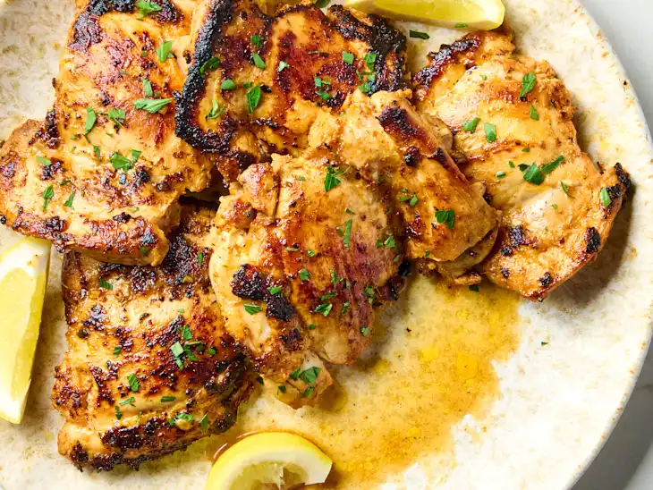

Prep Time: 10 minutes
Cook Time: 21 minutes
Servings: 4
Difficulty: Easy
Step 1: Prepare the following, adding each to the same medium bowl as you complete it: Finely grate the zest of 2 large lemons (2 tablespoons), then juice the lemons (about 1/3 cup). Mince 1 small shallot (about 3 tablespoons) and 4 garlic cloves (about 4 teaspoons).
Step 2:Add 1/4 cup olive oil, 2 teaspoons dried oregano, 1 1/2 teaspoons kosher salt, 1 teaspoon paprika, 1/2 teaspoon black pepper. Whisk to combine.
Step 3:Pat 2 pounds boneless, skinless chicken thighs dry with paper towels. Add to the marinade and turn to coat. Cover and refrigerate for at least 1 or up to 2 hours. Meanwhile, pick the leaves from 6 fresh parsley sprigs and finely chop (about 2 tablespoons); refrigerate until ready to use.
Step 4: Heat a 12-inch skillet or frying pan over medium-high heat until hot. Add half of the chicken in a single layer, shaking off any excess marinade back into the bowl. Cook until browned, cooked through, and at least 165ºF on an instant-read thermometer, 5 to 6 minutes per side. Transfer to a serving plate.
Step 5: Spoon off any remaining garlic in the pan. Repeat cooking the remaining chicken. Garnish with the parsley